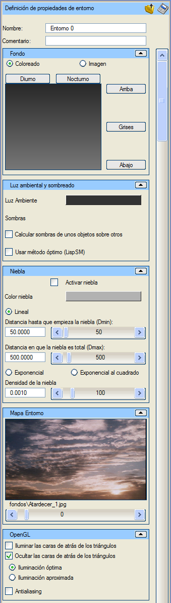
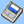
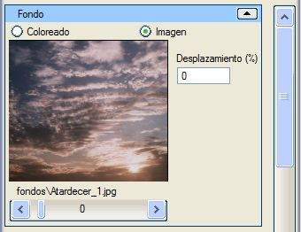

| |
|
Ortam
|
|
Genel Bilgiler Ortam, sahnenin atmosferini tanımlayan tüm özellikleri ve tüm sahneyi etkileyen diğer ayarları ifade eder. Bu menüde, sahne ortamının tüm özellikleri ayarlanabilir. Seçenekler İsim: ortamı bir isimle tanımlamayı sağlar. Yorum: ortama açıklayıcı bir yorum eklemeyi sağlar.  Ortamı sahne dışında bir dosyaya kaydetmeyi sağlar. Kayıtlı bir ortamı mevcut ortam olarak yükler. Arka Plan: 3B görüntüleyici penceresinin arka planının nasıl görüneceğini belirtir. Bu arka plan, bireysel görüntüler veya videolar oluşturmak için render işlemlerinde de kullanılacaktır. Arka plan bir renk, iki renk arasında bir geçiş veya bir resim olabilir. Gündüz, Gece ve Griler butonları, bu arka plan için önceden belirlenmiş renkleri belirtmeyi sağlar. Yukarı ve Aşağı, kullanıcının geçişin yapılmasını istediği belirli renkleri belirtmesine olanak tanıyan iki butondur. Her iki durumda da aynı renk seçilirse, arka planın tek bir renge sahip olması sağlanır. Arka planın bir resim olması seçilirse, bu amaç için mevcut olan resimler gösterilir. Resim, 3B görüntüleyici penceresine ve render edilecek görüntülerin veya videoların boyutuna uyacak şekilde ayarlanacaktır. Öteleme (%) seçeneği, resmin alt satırlarının kullanıcının ihtiyaçlarına uygun bir yüksekliğe gelebilmesi için arka planın pencere veya resim boyutunun yüzdesi olarak yukarı doğru kaydırılmasını sağlar.  Ortam Işığı: ortam ışığının rengini belirtir. Bu ışık, sahnenin hem aydınlatılmış hem de aydınlatılmamış alanlarında mevcuttur. Nesnelerin birbirine gölge düşürmesini hesapla: gölgelerin oluşturulacağını belirtir. Gölge hesaplaması karmaşıktır ve oldukça fazla kaynak tüketir. Optimal yöntemi kullan: yansıtılan gölgeleri hesaplarken daha yavaş olmasına rağmen daha hassas özel bir algoritma kullanır. Sisi etkinleştir: bir sis efektinin kullanılacağını belirtir. Bu, sahnenin her yönde bir sis bölgesine daldırıldığı anlamına gelir. Sis, başlangıç mesafesinde etkili olmaya başlar ve maksimum yoğunluğuna ulaştığı mesafeye kadar doğrusal olarak artar veya üssel olarak büyür. Sis rengi: sisin rengini belirtmeyi sağlar. Doğrusal: sisin yoğunluğu doğrusal olarak artar. Sisin başladığı mesafe: kameradan o mesafeden itibaren sis vardır, doğrusal sis başlar. O mesafeye kadar her yönde net görüş vardır. Sisin tam olduğu mesafe: o mesafeden itibaren hiçbir yönde hiçbir şey görünmez. Üssel ve Karesel Üssel: sis, belirlenen yoğunluğa ulaşana kadar çok hızlı bir şekilde artar. Sis yoğunluğu: üssel tipteki sisin yoğunluğunu belirler. Ortam haritası: malzemesi ortamı yansıtma özelliğine sahip tüm nesnelerin yansıtacağı görüntüyü belirtir. Son olarak, OpenGL'i yapılandıran bazı seçenekler vardır. Üçgenlerin arka yüzlerini aydınlat: üçgenlerin her iki yüzü için de aydınlatma hesaplanacağını belirtir, bu durum grafik sistemine yük bindirir ve bu yüzler çizilmeyecekse işe yaramaz. Üçgenlerin arka yüzlerini gizle: arka yüzlerin çizimi için varsayılan eylemi belirler. Optimal aydınlatma: aydınlatmanın hassas bir şekilde hesaplanacağını belirtir. Yaklaşık aydınlatma: hızlı bir aydınlatma yöntemidir. Kenar Yumuşatma (Antialiasing): üçgenlerin ve çizgilerin kenarlarında basamaklı (pikselli) kenarlar oluşmasını engellemeye çalışır. Grafik sisteminin iş yükünü artırır. |